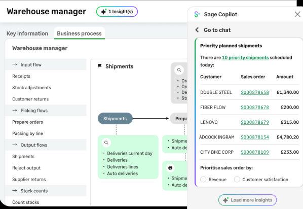

Built for Businesses That Outgrow Simple ERP.
Operational ERP for manufacturing, distribution, and food and beverage businesses with complex requirements. Production orders, supply chain, multi-site, multi-currency — and the operational data foundation that makes AI adoption meaningful at Stage 2 and above.
Operational ERP Designed for Complexity
Manufacturing
Production orders, BOM management, routings, quality control, and capacity planning for manufacturing businesses.
Distribution
Purchase orders, sales orders, and multi-site stock management with real-time visibility across all locations.
Food and Beverage
FEFO stock management, batch and lot traceability, allergen management, recipe management, and compliance documentation.
Multi-Site and Multi-Currency
Multi-site, multi-currency, multi-legislation. Designed for businesses with complex operational footprints across geographies.
Sales Intelligence Agent
Proactive alerts on overdue orders, delayed shipments, and declining customer demand — before they become customer issues.
Source: Sage X3 AI press release, February 2026.
Connected Supply Chain
Real-time visibility from purchase order creation through to delivery. Connected supply chain intelligence from the February 2026 release.
Operations and finance. One integrated platform.
Sage X3 is the full ERP for mid-market manufacturers, distributors, and complex multi-site operations. Finance, supply chain, production, and purchasing managed as a single integrated system.
Extended by X3CloudDocs — Mysoft's proprietary AP automation product — from day one. Implemented with the Agentic Finance Governance Framework to ensure every automation is governed, auditable, and ready for the next stage of AI maturity.

X3 configured for your operations
Sage X3 is built for operational complexity. The platform is configured differently for each sector's production, procurement, and compliance requirements.
Bill of Materials & Routing
Multi-level BOM management with version control and engineering change management. Production routings linked directly to cost centres, labour grades, and machine rates.
Production Planning
MRP and capacity planning integrated with demand forecasting and stock policy rules. Production orders linked to customer demand — with real-time material availability checking.
Manufacturing Cost Control
Standard costing, actual costing, and variance analysis built in. Real-time cost of goods manufactured reporting — without waiting for month-end finance to close the books.
Quality Management
Quality control workflows integrated into the production and goods-receiving process. Non-conformance tracking, quarantine management, and supplier quality scoring.
Order-to-Cash Automation
Customer order management through to invoice and cash allocation — with automated credit checking, pricing rules, and fulfilment workflows that remove manual touchpoints.
Multi-Site Stock Management
Real-time inventory visibility across multiple warehouses, bonded stores, and distribution points. Stock transfers, replenishment rules, and landed cost calculations managed automatically.
Supplier Management
Purchase-to-pay automation with three-way matching, supplier scorecards, and contract compliance monitoring. AP automation extended further with X3CloudDocs document intelligence.
Margin Analysis by Product & Channel
Gross margin by product line, customer, channel, and geography — with full cost allocation including freight, duty, and rebates. Profitability reporting the business can act on.
Lot Traceability & Recall
Full forward and backward lot traceability from raw material receipt through to customer delivery. Recall simulation and recall execution managed within X3 — with the audit trail required by the BRC and FSSC standards.
Best-Before & Use-By Management
Automated FEFO stock rotation with configurable shelf-life policies by customer and product. Expiry date warning workflows that prevent aged stock reaching despatch.
Recipe & Specification Management
Recipe management with version control, allergen flagging, and nutritional calculation. Specification changes automatically trigger affected BOM and routing updates.
Retailer Compliance
Retailer trading terms, promotional pricing, and artwork approval workflows managed within X3. EDI integration with major UK and European retailers for automated order processing.
Project Accounting
Project cost and revenue management integrated with the operational ERP. Budgets, actuals, and forecasts managed at project level — with resource cost allocation that reflects actual delivery costs.
Resource Planning
Capacity planning and resource scheduling linked to project demand. Utilisation reporting and forward-looking capacity analysis without spreadsheet modelling.
Contract & Retainer Billing
Milestone billing, time-and-materials billing, and retainer management — all configured to your specific commercial models. Revenue recognition aligned to delivery.
Service Profitability Reporting
Profitability by client, project, service line, and team — with the ability to drill from group-level performance to individual project level without leaving the platform.
20 Years of Sage X3 Expertise. 450+ Years of Combined Team Experience.
Mysoft has been implementing Sage X3 since before most UK ERP consultancies had heard of it. With 50+ in-house Sage specialists and over 450 years of combined X3 experience, Mysoft offers a depth of X3 knowledge no UK competitor can match.
Source: mysoftx3.com
X3CloudDocs Bridges Stage 1 and Stage 2
X3CloudDocs — the top-rated Sage X3 Marketplace product — activates AP automation, sales order automation, document management, and email notification automation directly within Sage X3.
No middleware. No separate vendor relationship. Built and maintained exclusively by Mysoft.
AI Capabilities Available from June 2025
Sage Copilot is embedded in Sage X3 from June 2025, bringing natural language interaction to operational data. The Sales Intelligence Agent and connected supply chain intelligence are available from the February 2026 release.
Sage Copilot for X3
Natural language queries and conversational data interaction across your operational ERP. Ask questions of your production, inventory, and financial data in plain language.
Available from June 2025. Source: Sage X3 Copilot press release.
Sales Intelligence Agent
Proactively surfaces overdue orders, delayed shipments, and customer demand changes before they become issues. Real-time operational intelligence for sales and operations teams.
Source: Sage X3 AI press release, February 2026.
Connected Supply Chain
Real-time visibility from purchase order creation through to delivery. Connected supply chain intelligence across suppliers, logistics, and customer fulfilment.
AI-Powered AP Automation
Expanded AI-driven document capture, classification, and vendor matching for accounts payable. Reduces manual invoice processing in manufacturing environments.
Sage X3 by Industry
Extended by a Curated Partner Ecosystem
Phocas
Operational BI and analytics for manufacturing and distribution businesses on Sage X3.
Netstock
AI demand planning and inventory optimisation. Reduces stock-outs and excess inventory.
Lynq
Manufacturing execution system and production scheduling integrated with Sage X3.
TrueCommerce
EDI and supplier integration connecting Sage X3 to your trading partner network.
Datalinx
Warehouse management system (WMS) for complex distribution operations on Sage X3.
Praxedo
Field service management integrated with Sage X3 for service-led businesses.
Book a Tailored Sage X3 Demonstration.
Scoped to your sector and operational complexity — with a Mysoft X3 specialist.